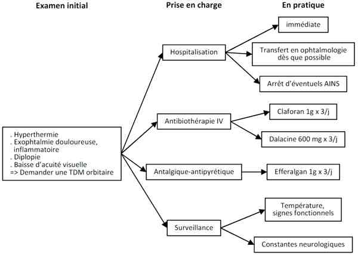

Bienvenue Sur Medical Education
Cellulite orbitaire de l'adulte
Spécialité : infectieux / ophtalmologie /
Points importants
-
Complication possible de :
-
dacryocystite aiguë, panophtalmie
-
sinusite (ethmoïdite++)
-
infection dentaire
-
Importance des diagnostics différentiels à éliminer (terrain, contage)
Présentation clinique / CIMU
SIGNES FONCTIONNELS
- dacryocystite aiguë, panophtalmie
- sinusite (ethmoïdite++)
- infection dentaire
Présentation clinique / CIMU
SIGNES FONCTIONNELS
Généraux
- Céphalées
Non spécifiques locaux
- Œil hyperhémié avec dilatation des vaisseaux conjonctivaux
- Œil douloureux
- En règle unilatéral
- Possible baisse d'acuité visuelle
Spécifiques
- Inflammation palpébrale ++ (rougeur, chaleur, oedème, douleur)
- Exophtalmie
- Diplopie
- Douleur à la palpation et mobilisation du globe oculaire
- signes cliniques d'orientation étiologique
CONTEXTE
Terrain favorisant
- Diabète
- Immunosuppression
Antécédents
- Orbitaires récents : traumatisme, CE, chirurgie
- Dacryocystite aiguë récente
- Corps étranger intra-orbitaire (parfois plusieurs mois avant)
Circonstances de survenue
- Complication de pathologie ou lésion sous-jacente
Facteurs favorisants
- Eléments étiologiques à rechercher (panophtalmie, infection systémique)
EXAMEN CLINIQUE
- Etat de conscience, raideur de nuque
-
Examen oculo-orbitaire :
- recherche d'une baisse d'acuité visuelle
- recherche de malocclusion palpébrale (exposition cornéenne)
- Examen de la sphère dentaire et ORL : recherche de sinusite, d'abcès dentaire sous-maxillaire
- Pression digitale en regard du sac lacrymal (angle interne de l'oeil) à la recherche d'une expression purulente par les méats lacrymaux : objective une dacryocystite
EXAMENS PARACLINIQUES SIMPLES
- Hyperthermie
CIMU
-
Tri 2
Signes paracliniques
IMAGERIE
Radiologie
- Face haute (sinus)
TDM orbitaire
- Infiltration de la graisse orbitaire
Diagnostic étiologique
Staphylocoques, streptocoque, BGN (trauma)
- Infections focales
- Dacryocystite aiguë, panophtalmie
- Sinusite
- Infection dentaire
- Infection cutanée locale
Bactériémie
Traumatisme
- Chirurgie
- Fracture avec solution de continuité sinusienne
- Corps étranger intra-orbitaire
Diagnostic différentiel
-
Fistule carotido-caverneuse
-
Pseudotumeur inflammatoire orbitaire
-
Exophtalmie dysthyroïdienne
Traitement
TRAITEMENT HOSPITALIER
-
Antibiothérapie double en association, parentérale IV
-
Drainage chirurgical urgent si :
-
exposition cornéenne non réductible
-
détérioration des constantes neurologiques
-
72h d'antibiotiques inefficaces
-
Antipyrétiques-antalgiques
MEDICAMENTS
-
Antibiothérapie :
-
céfotaxime 50 mg/kg/6h ou ceftriaxone 50 mg/kg/12h
-
en association avec clindamycine 40 mg/kg/j en 3 doses séparées
-
Antipyrétiques-antalgiques :
-
paracétamol type Efferalgan® : 60 mg/kg /j
Surveillance
CLINIQUE
-
Température x 3/j
-
Evolution de l'exophtalmie, des douleurs, de l'inflammation locale x3/j
-
Constantes neurologiques x3/j
Devenir / orientation
CRITERES D'ADMISSION
-
Hospitalisation en ophtalmologie
-
Drainages secondaires d'éventuels sinusite ou abcès dentaire sous-maxillaire à organiser dans les jours suivants
ORDONNANCE DE SORTIE DU SAU
-
Céfotaxime 50 mg/kg/6h ou ceftriaxone 50 mg/kg/12h en association avec clindamycine 40 mg/kg/jour en 3 doses séparées
-
Paracétamol type Efferalgan®: 60 mg/kg /j
Mécanisme / description
-
La cellulite orbitaire est l'extension rétroseptale (au delà du septum orbitaire) d'une infection locale, favorisée par un terrain débilité (DID) ou la prise d'AINS
-
Les complications possibles sont l'ulcère cornéen d'exposition, la collection locale : abcès orbitaire, la névrite optique, la septicémie, la thrombophlébite du sinus caverneux (confusion fébrile associée)
Algorithme
-
Algorithme : cellulite orbitaire de l'adulte
Traitement
TRAITEMENT HOSPITALIER
- Antibiothérapie double en association, parentérale IV
-
Drainage chirurgical urgent si :
- exposition cornéenne non réductible
- détérioration des constantes neurologiques
- 72h d'antibiotiques inefficaces
- Antipyrétiques-antalgiques
MEDICAMENTS
-
Antibiothérapie :
- céfotaxime 50 mg/kg/6h ou ceftriaxone 50 mg/kg/12h
- en association avec clindamycine 40 mg/kg/j en 3 doses séparées
-
Antipyrétiques-antalgiques :
- paracétamol type Efferalgan® : 60 mg/kg /j
Surveillance
CLINIQUE
-
Température x 3/j
-
Evolution de l'exophtalmie, des douleurs, de l'inflammation locale x3/j
-
Constantes neurologiques x3/j
Devenir / orientation
CRITERES D'ADMISSION
-
Hospitalisation en ophtalmologie
-
Drainages secondaires d'éventuels sinusite ou abcès dentaire sous-maxillaire à organiser dans les jours suivants
ORDONNANCE DE SORTIE DU SAU
-
Céfotaxime 50 mg/kg/6h ou ceftriaxone 50 mg/kg/12h en association avec clindamycine 40 mg/kg/jour en 3 doses séparées
-
Paracétamol type Efferalgan®: 60 mg/kg /j
Mécanisme / description
-
La cellulite orbitaire est l'extension rétroseptale (au delà du septum orbitaire) d'une infection locale, favorisée par un terrain débilité (DID) ou la prise d'AINS
-
Les complications possibles sont l'ulcère cornéen d'exposition, la collection locale : abcès orbitaire, la névrite optique, la septicémie, la thrombophlébite du sinus caverneux (confusion fébrile associée)
Algorithme
-
Algorithme : cellulite orbitaire de l'adulte
Devenir / orientation
CRITERES D'ADMISSION
- Hospitalisation en ophtalmologie
- Drainages secondaires d'éventuels sinusite ou abcès dentaire sous-maxillaire à organiser dans les jours suivants
ORDONNANCE DE SORTIE DU SAU
- Céfotaxime 50 mg/kg/6h ou ceftriaxone 50 mg/kg/12h en association avec clindamycine 40 mg/kg/jour en 3 doses séparées
- Paracétamol type Efferalgan®: 60 mg/kg /j
Mécanisme / description
-
La cellulite orbitaire est l'extension rétroseptale (au delà du septum orbitaire) d'une infection locale, favorisée par un terrain débilité (DID) ou la prise d'AINS
-
Les complications possibles sont l'ulcère cornéen d'exposition, la collection locale : abcès orbitaire, la névrite optique, la septicémie, la thrombophlébite du sinus caverneux (confusion fébrile associée)
Algorithme
-
Algorithme : cellulite orbitaire de l'adulte
Algorithme
- Algorithme : cellulite orbitaire de l'adulte
 _16 Algorithme Algorithme : cellulite orbitaire de l'adulte
Bibliographie
-
P. Dureau. Cellulite orbitaire. Archives de pédiatrie 2004; 11(12): 1555-6
Auteur(s) : Jean-Louis BOURGES